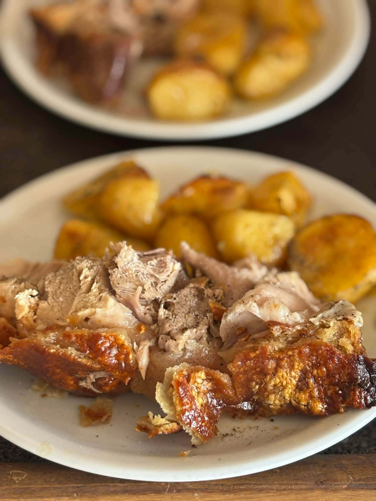
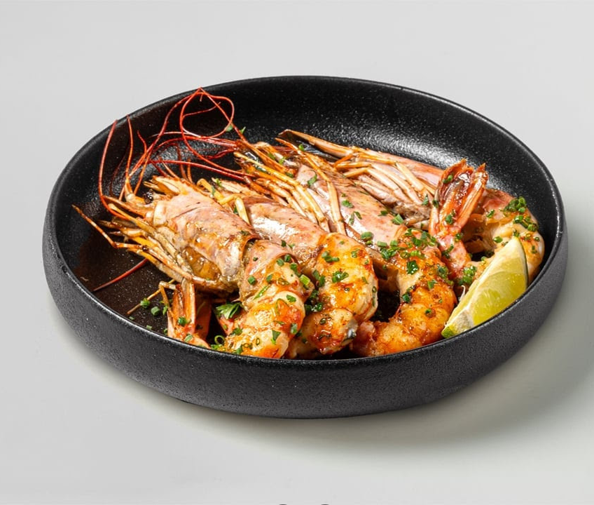
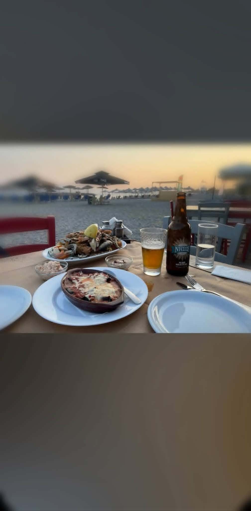
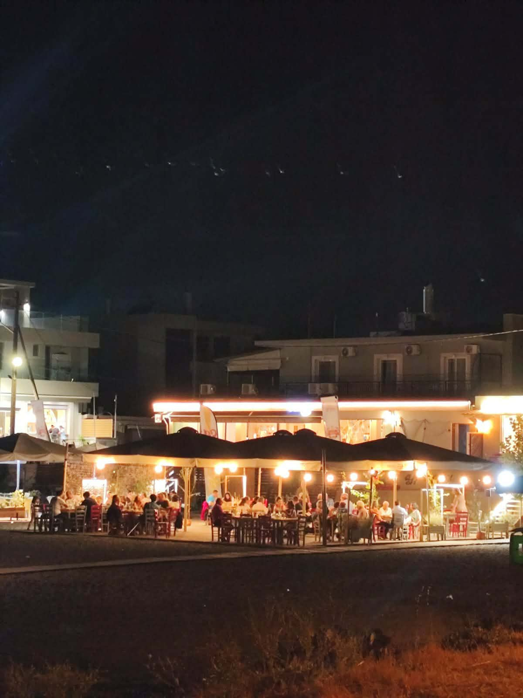
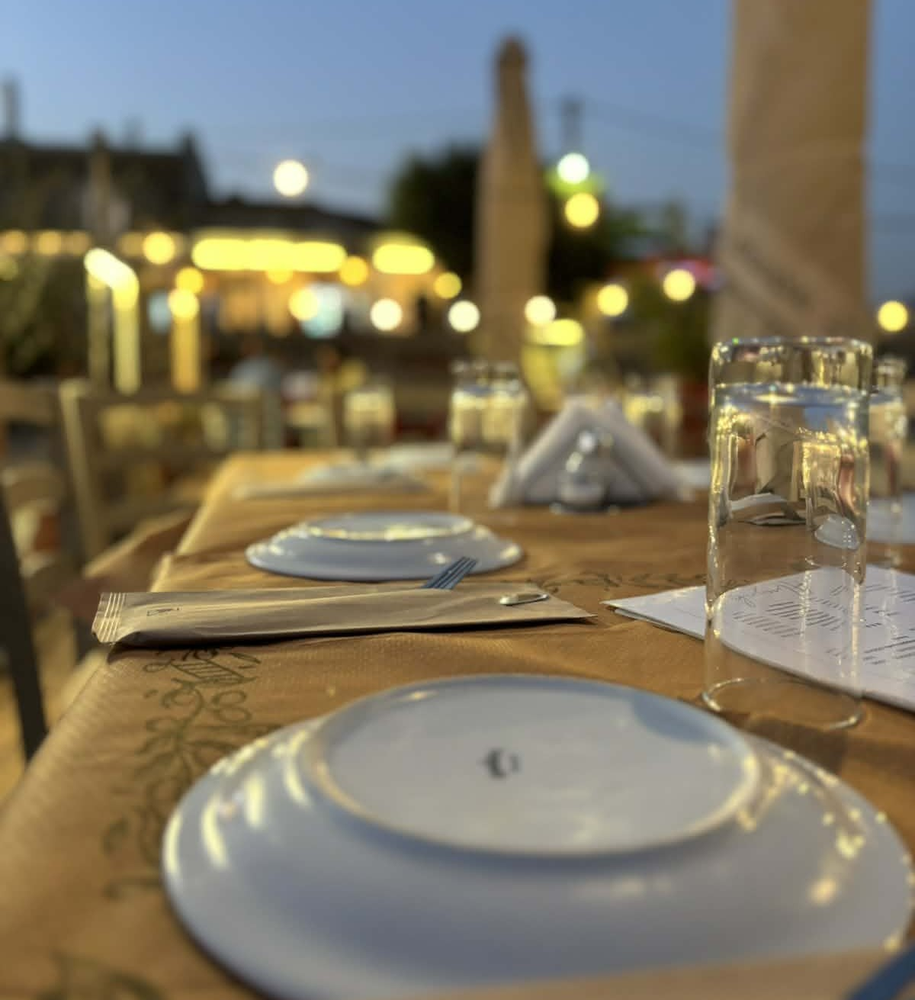
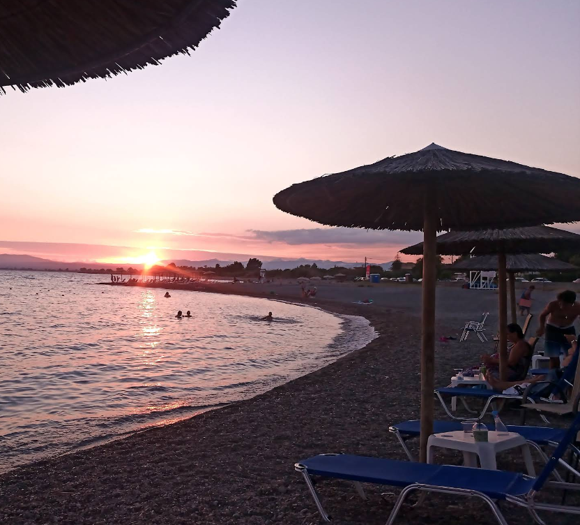

Το 2012 γεννήθηκε η ιδέα να δημιουργήσουμε ένα χώρο όπου ο κόσμος θα μπορούσε να απολαμβάνει καλό και παραδοσιακό φαγητό, λες και τρώει στο σπίτι της μαμάς του. Το 2013 η ιδέα έγινε πραγματικότητα και το μαγαζί μας άνοιξε τις πόρτες του για πρώτη φορά. Από τότε, μέχρι και σήμερα, συνεχίζουμε να σας προσφέρουμε την αγάπη μας για την παραδοσιακή κουζίνα, βελτιώνοντας συνεχώς κάθε πιάτο και κάθε εμπειρία, χρόνο με το χρόνο. Στο μαγαζί μας, κάθε γεύση έχει ιστορία και κάθε πιάτο φτιάχνεται με μεράκι… όπως στο σπίτι!





